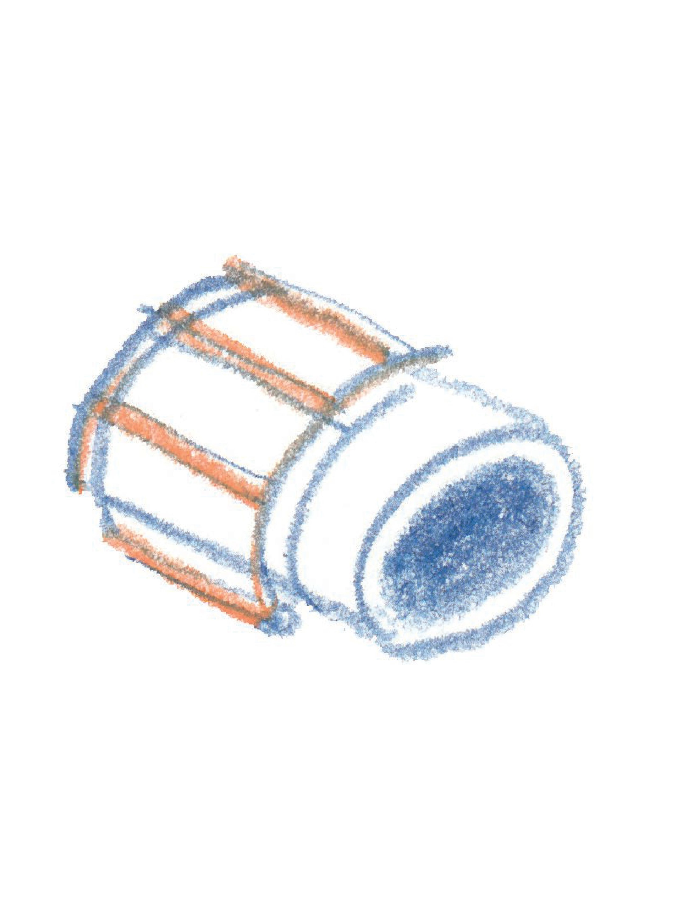

CUICA
A Brazilian friction drum made in California by the Gonbops company. It is played by inserting the hand
into the drum and rubbing on a stick (which itself is inserted into the centre of the skin of the drum),
between the thumb and index finger with the aid of a damp sponge or a piece of leather in order to make
the skin vibrate, thus producing the sound. The cuica plays an important role in traditional Brazilian
folk music and its inimitable sound can be heard on “Teenage Tears”.
TRIANGLE
This one was custom built by the eminent French percussion maker, Daniel Frouvelle, who lives and works
in the Pyrenees. It was created after mediaeval and Renaissance iconographical evidence and, most
notably, from Marin Mersenne’s famous treatise, Harmonie Universelle, of 1636. It differs from the
modern orchestral triangle in that it is made of solid brass and has several rings, similar to curtain
rings, which jingle ‘in sympathy’ to the basic sound, (a ‘deader’ sound), and provide an added, lighter
timbre, rich in harmonics. On this record, it is played alongside the cuica on “Teenage Tears”.